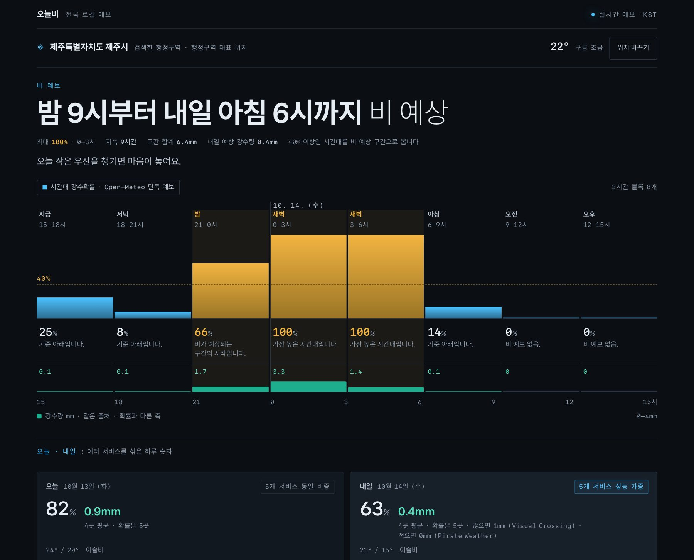

Web · Data · Personal projectLive
Raintoday
Weather apps disagree about rain, so I built Raintoday to compare forecasts from five weather services and later check them against actual observations.
- TypeScript
- Next.js
- PostgreSQL
- 97 KMA observation stations
- 9,712 stored forecasts · Oct 15, 2026
- 5 weather services compared
- Forecast collection
Scheduled runs fetch forecasts from Open-Meteo, the Korea Meteorological Administration (KMA), Pirate Weather, WeatherAPI and Visual Crossing. KMA transport errors are retried up to three times with increasing delays.
- Storage
Station, date and issue run form the primary key, and an existing forecast is never touched. A later value cannot overwrite a forecast stored earlier.
- Observation check
Actual observations from 97 KMA stations are fetched later and compared with the stored forecasts. As of Oct 15, 2026, 9,712 forecasts and 5,529 observations had accumulated.
- Weighted blend
Services with better recent Brier scores get more weight. When the benchmark has too few comparisons, or shows the weighted blend scoring worse than equal weighting, all services are weighted equally.
Why preserve a forecast as issued?
Forecasts are kept exactly as issued. When part of a collection fails, it is retried only under set conditions and after a wait, and later values never fill in past forecasts. A finished retry is not counted as a successful collection, and missing data is treated differently from a 0% chance of rain.

This comparison does not show that Raintoday is more accurate overall.